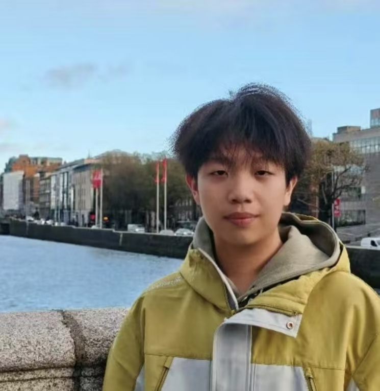

Large Language Models
Reasoning, agents, and reliable language-model systems that can generalize beyond static benchmarks.
MPhil student in Artificial Intelligence at HKUST(GZ), working on multimodal intelligence, large language models, and computer vision.
I am interested in building reliable and human-centered AI systems that connect language, vision, and multimodal reasoning, with a particular focus on affective understanding.

I am an MPhil student in Artificial Intelligence at The Hong Kong University of Science and Technology, Guangzhou Campus, where I am advised by Prof. Hui Xiong (Fellow of ACM/IEEE/AAAI/AAAS/CCF/CAAI) in the AI+ Lab.
Previously, I received my B.Sc. in Computer Science & Technology from Jilin University. During my undergraduate studies, I was a research assistant at the Affective Vision Computing Lab, advised by Prof. Hongxia Xie, and collaborated with Prof. Wen-Huang Cheng (Fellow of IEEE and IAPR).
Reasoning, agents, and reliable language-model systems that can generalize beyond static benchmarks.
Connecting language with visual signals for grounded perception, understanding, and generation.
Visual representation learning and vision-language methods for challenging real-world scenarios.
Tool-using, memory-augmented, and multi-step reasoning agents that can plan and act in complex environments.
* denotes equal contribution.
ACM International Conference on Multimedia, 2025
Annual Meeting of the Association for Computational Linguistics, 2026
IEEE Transactions on Affective Computing
IEEE/CVF Conference on Computer Vision and Pattern Recognition, 2026
IEEE Transactions on Multimedia
MPhil in Artificial IntelligenceMPhil Student
B.Sc. in Computer Science & TechnologyAverage score: 89/100 · Rank: 6/102
ReviewerServed as a reviewer for ARR May 2026.
ReviewerServed as a reviewer.
I am happy to discuss research, collaboration, and opportunities in multimodal intelligence.